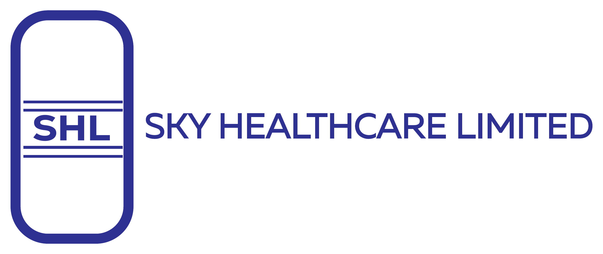

Pharmaceutical distribution
Branded, generic and specialty medicines supplied to hospitals, pharmacies, clinics and healthcare organizations.

PHARMACEUTICAL DISTRIBUTION · KENYA
Sky Healthcare helps manufacturers, hospitals, pharmacies and clinics move essential medicines and healthcare products safely and efficiently.
WHAT WE DO
Branded, generic and specialty medicines supplied to hospitals, pharmacies, clinics and healthcare organizations.
Temperature and humidity monitoring, secure warehousing and a cold room supported by 24-hour backup power.
Order handling, regional distribution and a channel network designed to reach smaller towns and remote facilities.
WHY SKY HEALTHCARE
Our team combines pharmaceutical, logistics, finance, regulatory and customer-service experience to keep products moving and customers informed.
CONTACT US
Tell us what you need, where it needs to go and when you need it. Our Nairobi team will respond directly.
NAIROBI OFFICE
Laxcon Plaza, Ground Floor